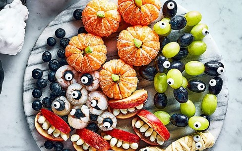

Festive fruit platter

Ingredients
- Mango and blacberry skewers
- Monster apples
- Strawberry ghosts
- Satsuma pumpkins
Preparation
- Wash, chop and put them on skewers
- Cut the apples, soak in salt/lemon solution, add peanut butter, marhmallows and strawberry slice
- Dip the strawberried in white chocolate and draw eyes
- Dress the satsumas to look like pumpkins :)